Cuatro diseñadores, cuatro ideas opuestas de Comer entero. Ronda 1: cada uno su diseño. Ronda 2: se miraron, se criticaron, robaron una idea y corrigieron. El buscador y la ficha del alimento son los que ya aprobaste y van igual en todos. Cifras de ejemplo.
Los tres rivales le robaron lo mismo a «Una pregunta»: la tarjeta «Ahora toca · Cena: tortilla con ensalada · ✓ Hecho · Otra». Es la idea ganadora del debate, gane quien gane: entre en el diseño que entre, va.
Las críticas que se repiten: a «El tablero» y «La nevera», demasiado pequeño y denso para leerlo cansado; a «El reloj», que hay que bajar para ver la semana; a «Una pregunta», que no se ve el conjunto.
«Comer es una línea que va de ahora hacia delante. Lo que comes ahora, esta tarde, mañana y el domingo cuelgan de la misma línea, y la semana es su continuación, no una tabla. La compra, la nevera, el antojo y las vitaminas son paradas que aparecen en la hora en que tocan.»
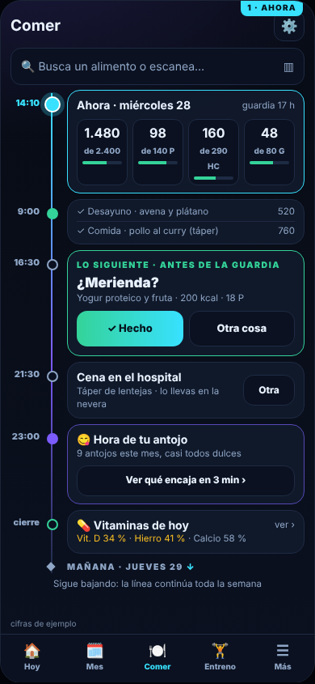
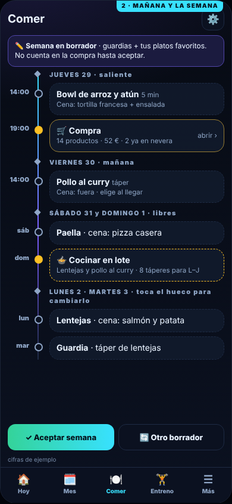
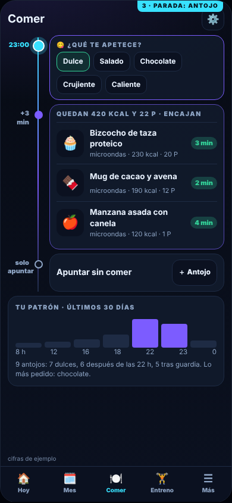
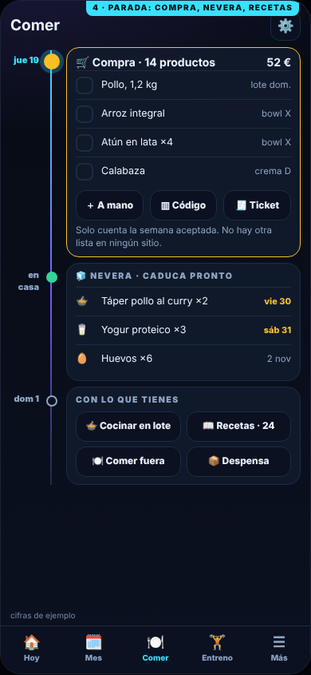
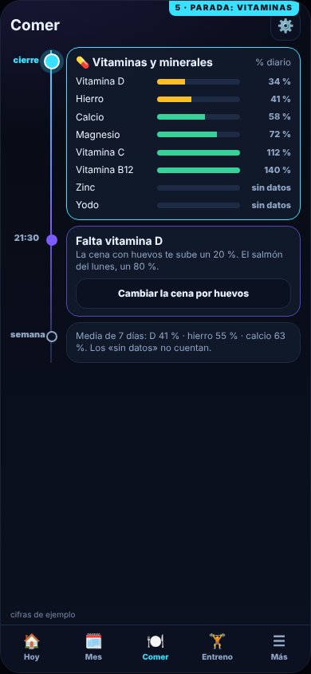
de Una pregunta, el «✓ Hecho / Otra cosa» grande para la comida que toca.
la parada de las 16:30 es ahora la tarjeta destacada «Lo siguiente · ¿Merienda?» con botones a ancho completo; botón «Otra» de 44 px en la cena. Medido: todo cabe.
Los otros le enseñan un inventario, un botón o una tabla; yo le enseño su día de guardia en el orden en que lo va a vivir. Semana, compra, antojo de las 23 h y vitaminas cuelgan de la misma línea sin repetirse. Quien trabaja 24 h no piensa «¿en qué pestaña está la compra?», piensa «¿qué toca ahora y qué viene luego?».
«Nadie cocina a un plan: cocina a lo que tiene en casa. Comer es una nevera dibujada: cada táper, cada bote y cada hueco es un botón. Lo que sacas es lo que has comido, lo que vas a cocinar sale de lo que hay, y lo que falta es un hueco con rayas: eso es la compra.»
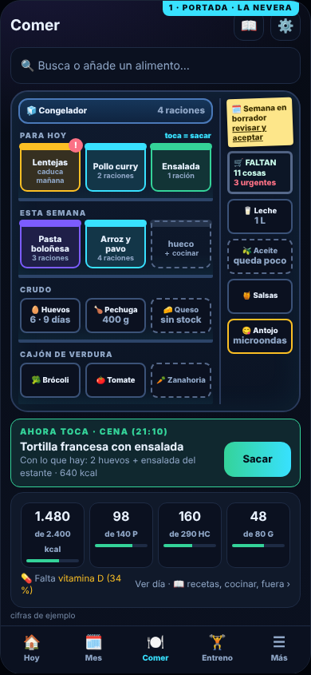
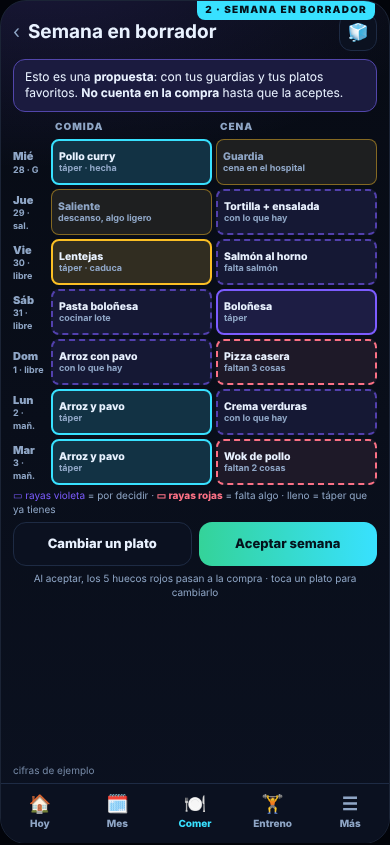
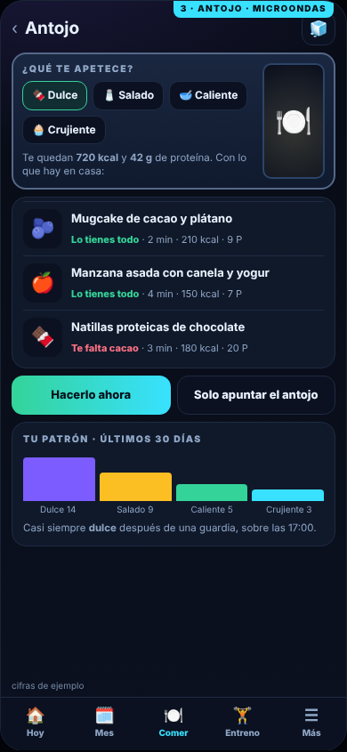
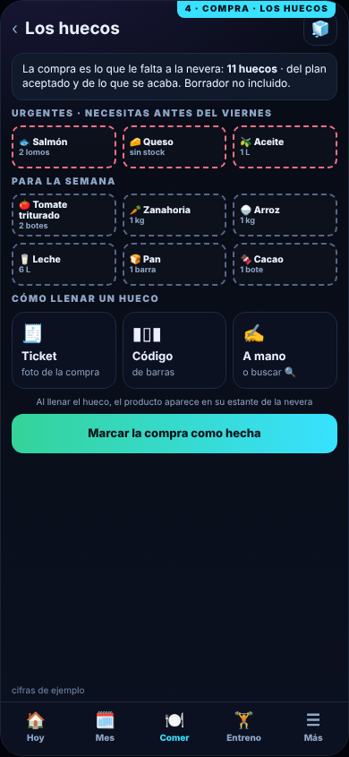
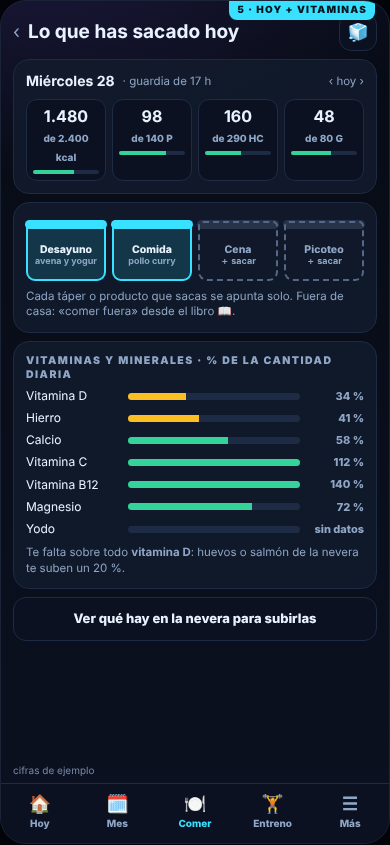
de Una pregunta, la tarjeta «Ahora toca · Cena: tortilla con ensalada, con lo que hay» con el botón «Sacar».
«Ahora toca» en la portada; macros del día y aviso de vitamina D en una tarjeta; rótulos de táperes más grandes; botón del antojo acortado. Medido: todo cabe.
Todo lo que decide qué comes está en tu nevera, y solo yo lo dibujo como objetos que se tocan. Con «Ahora toca» tengo además la decisión única sin renunciar a ver semana, compra y vitaminas. Un táper que se saca es una comida apuntada y un hueco vacío es la compra: no hay dos listas ni dos «Hoy».
«Comer no es un panel: es una conversación con alguien que ya lo ha pensado. Una sola pregunta grande, la que toca ahora, con su respuesta y dos botones: «Hecho» y «Otra». Semana, antojo, casa y vitaminas son otras tarjetas de la misma baraja.»
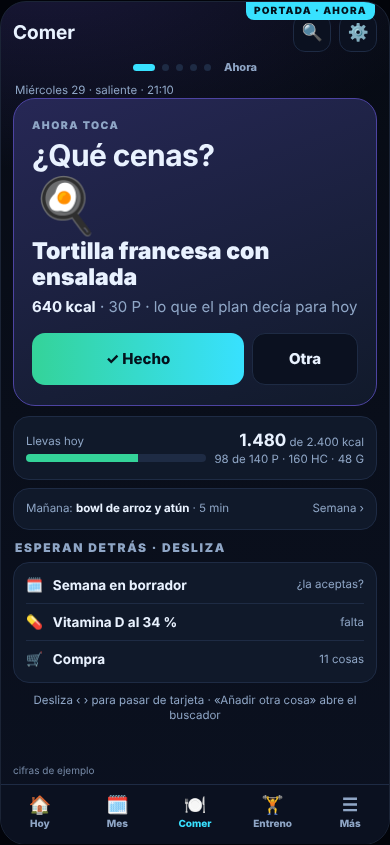
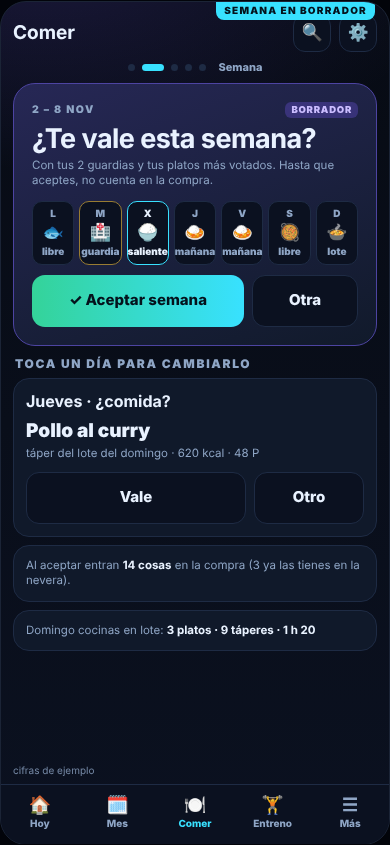
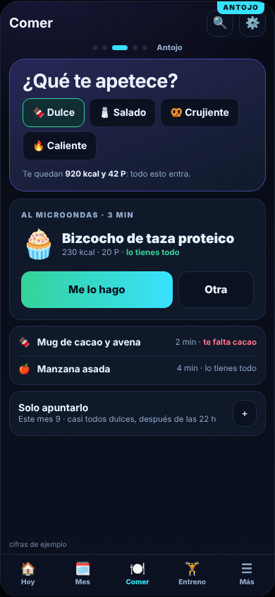
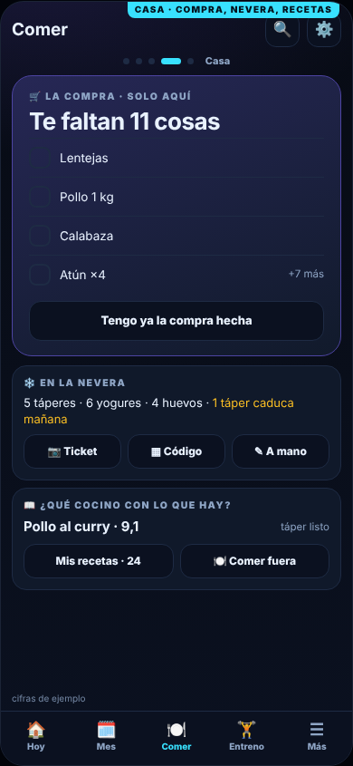
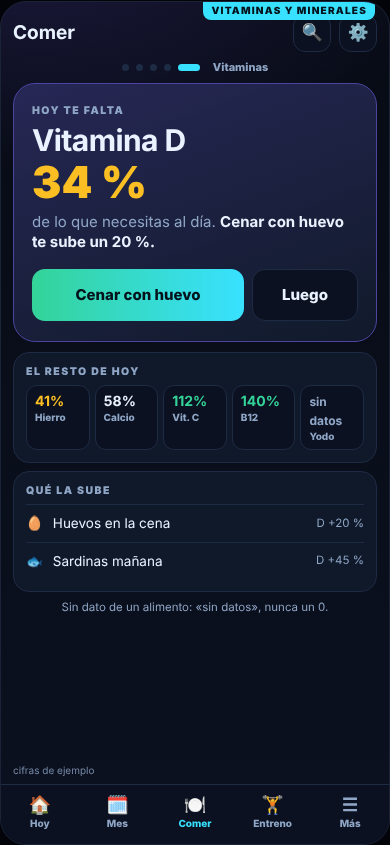
de La nevera, la línea «lo tienes todo» / «te falta cacao» en cada receta del antojo.
«Esperan detrás» en la portada (semana en borrador, vitamina D, compra); al aceptar la semana se ve qué entra en la compra; «1 táper caduca mañana»; tarjeta «Qué la sube» en vitaminas. Medido: todo cabe.
Cuando sales de una guardia no quieres un panel ni una línea que recorrer: quieres que alguien te diga «cena esto» y responder «hecho». Mis cinco tarjetas cubren todo el encargo sin pasar de 2 toques ni bajar la pantalla, con letra grande y botones de 52 px. Los rivales ganan en cantidad; yo gano en decidir en 3 segundos.
«Si lo que necesitas saber cabe en una pantalla, no debería costarte un toque. La portada es la semana entera: siete días por cuatro momentos, cada casilla pintada con sus macros y el borrador en trazo discontinuo, con cuatro medidores alrededor: nevera, compra, antojos y vitaminas.»
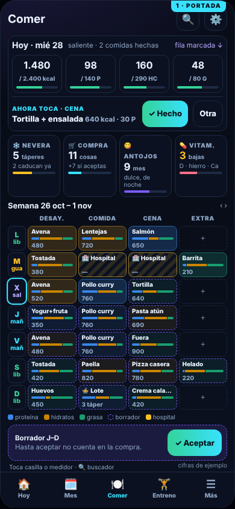
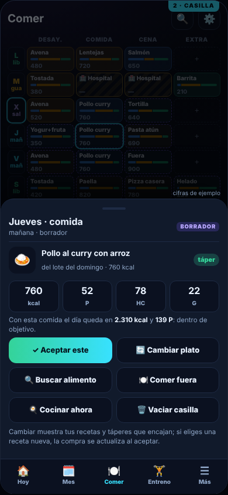
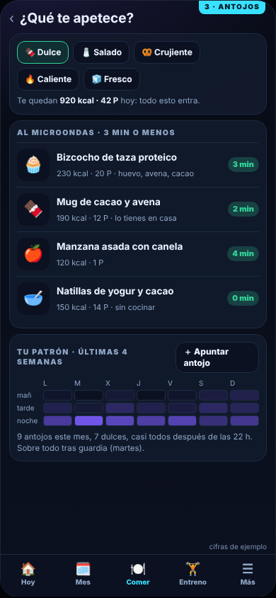
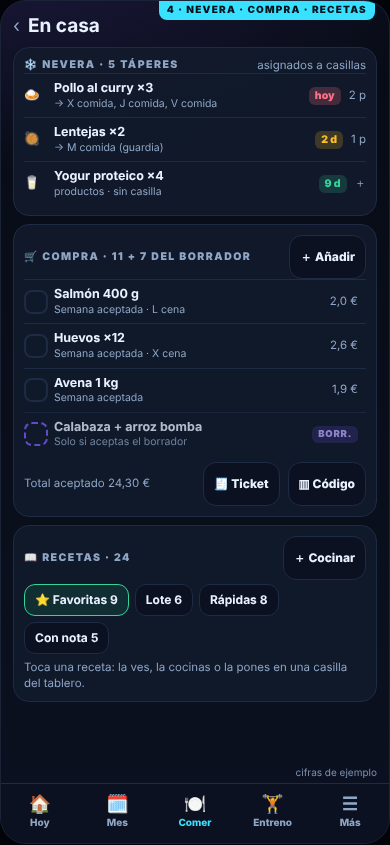
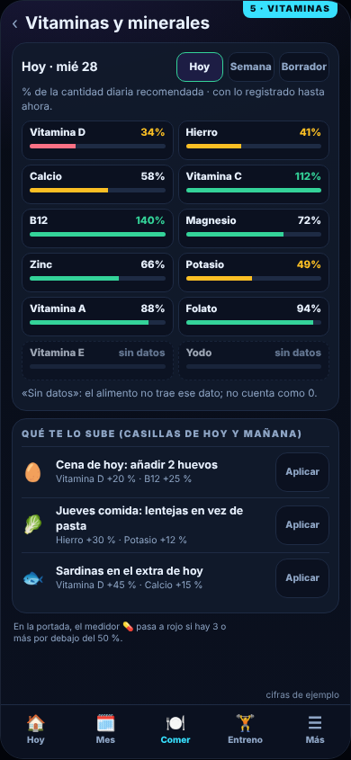
de Una pregunta, la franja «Ahora toca · Cena: tortilla + ensalada · ✓ Hecho · Otra» dentro de la tarjeta de hoy.
franja «Ahora toca»; «Lote · 3 táper» ya no se corta; «cifras de ejemplo» despegado; quitadas etiquetas que tapaban títulos. Medido: todo cabe.
El residente abre Comer para saber en cinco segundos si la semana está bajo control. Yo le doy semana, nevera, compra, antojos y vitaminas en una pantalla, y además el «Hecho» a un toque. Los demás esconden el conjunto detrás de un scroll, una baraja o una nevera de iconos.